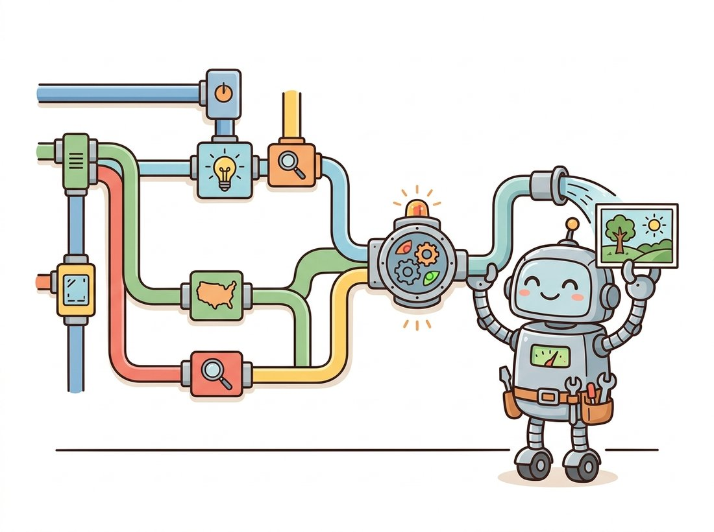

"I used to be a function. Now I am a graph with forty boxes and a tangle of wires, and the strange part is that I am easier to understand this way. Apparently a picture of a pipeline beats a paragraph describing one."
A Generation Workflow Admiring Its Own Wiring
Modern image generation is rarely a single function call; it is a multi-stage graph (encode the prompt, load a base model, attach a ControlNet, sample, upscale, decode, fix faces), and node-based engines like ComfyUI exist because a visual graph is the natural way to author, share, and reproduce that graph. The node model is not a beginner toy; it is a different representation of the same components Section 38.1 exposed in Python, and the right choice between them is a question of how branching your pipeline is and who needs to read it.
The Python pipeline of Section 38.1 holds up beautifully until your generation grows a second branch, and then it quietly turns into a wall of calls whose dependencies you can only reconstruct by reading every line. One prompt feeds a base model and a refiner, a ControlNet from Chapter 35 conditions the sample, an upscaler runs, a face-restoration pass cleans up, two LoRAs mix at chosen weights. Expressed as a graph, those same dependencies are the wires, and the structure is visible at a glance. This section explains why the open generative community converged on node-based workflow engines, reads a ComfyUI workflow as a computation graph, and draws the line between when a graph beats a script and when it does not.
1. Why Generation Became a Graph Beginner
A bare text-to-image call is a straight line: prompt in, image out. But every technique from Part IV that adds control also adds a stage, and stages compose into a directed graph rather than a line. A ControlNet adds a branch that preprocesses an input image into a conditioning map and merges it into the denoiser. An upscaler adds a stage after the first decode. A refiner adds a second denoiser that takes over at a chosen step. Face restoration adds a post-process. The illustration below captures the spirit of it: a tidy tangle of branching pipes feeding one mixing box, and Figure 38.2.1 then draws the same pipeline precisely.

The graph in Figure 38.2.1 is the same computation Section 38.1 would express in Python, but the representation matters. In a script, the fact that the sampler needs three inputs (model, conditioning, control) is buried in a function signature; in the graph, three wires arrive at the sampler node and you can see it. When the pipeline has a dozen stages and several branches, the visual form stops being a convenience and becomes the only practical way to author and audit it. This is why the open community standardized on node engines for anything beyond a basic prompt.
2. ComfyUI: The Node Model Intermediate
ComfyUI is the dominant node-based engine for diffusion. It presents a canvas of nodes, each node a typed operation (load a checkpoint, encode a prompt, sample, decode, upscale), with input and output ports that you connect by dragging wires. A workflow is a graph of these nodes. Crucially, the engine executes the graph lazily and caches node outputs, so changing one parameter, the seed, the guidance, a prompt word, re-runs only the nodes downstream of the change. For an expensive pipeline this is a large practical speedup over re-running a whole script.
Picture the Figure 38.2.1 pipeline as a plain Python script and edit a single word in the prompt. The script has no memory, so it dutifully reloads the multi-gigabyte checkpoint, re-encodes, re-samples, decodes, and upscales again from the top, the same several seconds (and on a cold start, the slow multi-second weight load) you paid the first time. Now make the same one-word edit in ComfyUI. Only the prompt-encode node and everything downstream of it re-run; the "Load Checkpoint" node, the single most expensive step, is cached and skipped entirely, so the iteration that cost the script its full run costs the graph a fraction of it. That is why a designer can twist a prompt or a guidance value dozens of times a minute in the canvas: the cache turns each tweak into "re-run the part that changed", not "re-run the whole pipeline". It is the same insight as memoizing a pure function, applied to a generation graph.
Under the visual surface, a ComfyUI workflow is just JSON: a set of nodes with their types and parameters, where each node's inputs name the upstream node and output port they connect to. That JSON is the reproducible artifact. You can read it, diff it in version control, and share it, and the entire pipeline travels with it. The node types map directly onto the Diffusers components from Section 38.1: a "Load Checkpoint" node yields the model, CLIP, and VAE; a "CLIP Text Encode" node is the text encoder; a "KSampler" node is the scheduler plus denoiser loop; a "VAE Decode" node is the decoder. The mental model you built in Python carries over directly.
{
"1": {"class_type": "CheckpointLoaderSimple",
"inputs": {"ckpt_name": "sd_xl_base_1.0.safetensors"}},
"2": {"class_type": "CLIPTextEncode",
"inputs": {"text": "a lighthouse in a storm", "clip": ["1", 1]}},
"3": {"class_type": "KSampler",
"inputs": {"seed": 42, "steps": 30, "cfg": 6.5,
"model": ["1", 0], "positive": ["2", 0]}},
"4": {"class_type": "VAEDecode",
"inputs": {"samples": ["3", 0], "vae": ["1", 2]}}
}
/prompt endpoint accepts (the canvas-export format wraps the same nodes in a slightly richer layout). Each node names a class_type and its parameters; an input written as ["1", 1] means "the second output of node 1", which is how the wires of Figure 38.2.1 are encoded. The "Load Checkpoint" node 1 emits three outputs (model, CLIP, VAE) that the encode, sample, and decode nodes consume, exactly the components of Section 38.1.
Reading that JSON, you can trace the same flow as the diagram: node 1 loads the checkpoint and exposes its three components; node 2 encodes the prompt using the CLIP output (port 1) of node 1; node 3 samples using the model (port 0) and the conditioning; node 4 decodes the sampled latent using the VAE (port 2). The KSampler's steps and cfg fields are the same two knobs as the Diffusers call in Section 38.1: steps is num_inference_steps, and cfg (short for classifier-free guidance) is guidance_scale, so the node graph exposes nothing new, only the same parameters under ComfyUI's shorter names. The bracket notation ["1", 1] is the wire. This is the literal content of a workflow file, and it is why a ComfyUI graph is both a visual artifact and a precise, diffable specification.
Because ComfyUI bakes the whole graph into the PNG's metadata, the prettiest images on the internet are also self-extracting build scripts. Drag a stranger's output back onto your canvas and their entire pipeline, every node, seed, and LoRA weight, unpacks itself. It is the only corner of machine learning where "reproducing the paper" can mean dragging a picture onto a window. The flip side: strip the metadata before you publish, or you are shipping your secret recipe with the dish. The illustration below shows a dragged-in picture unfolding its own hidden node graph.
ComfyUI embeds the full workflow JSON into the metadata of every PNG it saves. Drag that image back onto the canvas and the entire graph reconstructs: every node, parameter, seed, and connection. This solves a problem that plagued early generation work, the inability to reproduce an image you liked because the exact pipeline was lost. In the node world, the image carries its own recipe. This is the generative analog of the experiment-tracking discipline from the deep-vision stack in Chapter 29: the run is reproducible because its full configuration is recorded with its output.
With the node model and the HTTP API of this section, you could build a small reusable template library for a team: three or four parametrized ComfyUI workflows (a plain text-to-image graph, a ControlNet-conditioned graph, a base-plus-refiner-plus-upscale graph) saved as API-format JSON, checked into a git repository, and wrapped by one thin Python launcher that loads a chosen template, overrides the prompt and seed, and queues it. This is the productized form of the "pipeline nobody could reproduce" field story above, and it complements the single-pipeline Code-rung studio from the Section 38.1 lab rather than repeating it: there the artifact was one script, here it is a shareable graph catalog any teammate can run. Difficulty: intermediate, roughly two to three hours. Portfolio value is high, because a clean template-plus-launcher repository is exactly the artifact a studio or a marketing team needs and is easy to demo from a single dragged-in PNG.
It is tempting to conclude that because the workflow JSON travels inside the PNG, the image is a complete, portable, click-to-reproduce artifact. It is not self-contained. The embedded graph references its checkpoints, VAEs, LoRAs, and custom node packs by name, the same ["1", 1]-style references and string identifiers you read in the JSON above; it does not carry the multi-gigabyte weights or the third-party node code. Drag a stranger's image onto a canvas that is missing the exact sd_xl_base_1.0.safetensors checkpoint, the specific LoRA file, or a community node the graph uses, and the workflow will fail to load or silently bind to a different file, and your output will not match theirs. Reproducibility here is bit-exact only when the referenced assets and node versions are identical; the embedded JSON records which ingredients, not the ingredients themselves.
3. Node Engine Versus Python Script
Node engines and Python scripts are two representations of the same components, and neither dominates. The graph wins when the pipeline is branching, when you are iterating interactively on parameters and want only the changed branch re-run, when you are sharing a pipeline with non-programmers, or when the reproducibility-in-the-PNG property matters. The script wins when the pipeline is linear, when it must be embedded in a larger application or a test suite, when you need programmatic control flow (loops over a dataset, conditional branches on a metric), or when it lives in version control alongside other code. Table 38.2.1 lays out the trade-off.
| Dimension | Node engine (ComfyUI) | Python script (Diffusers) |
|---|---|---|
| Branching pipelines | Natural; wires show dependencies | Implicit in variable names |
| Interactive iteration | Re-runs only changed downstream nodes | Re-runs the whole script unless you cache by hand |
| Sharing with non-coders | Visual, draggable, self-documenting | Requires reading code |
| Reproducibility | Full graph embedded in the output PNG | Requires disciplined seed and config logging |
| Programmatic control flow | Awkward; not built for loops or conditionals | Native (loops, branches, datasets) |
| Embedding in an app or tests | Via its HTTP API, an extra layer | Direct import |
| Version control diffs | JSON diffs are noisy but workable | Clean line-level diffs |
The two are not mutually exclusive. A common production pattern is to prototype a pipeline visually in ComfyUI, then drive that exact workflow programmatically through the engine's HTTP API, getting the visual authoring and the programmatic control at once.
Suppose you want a base-plus-refiner-plus-upscale-plus-face-fix pipeline with two mixable LoRAs and a ControlNet. In raw Diffusers that is a careful 60 to 100 line script: load several models, manage their device placement, hand the latent from the base sampler to the refiner at the right step, decode, run the upscaler, run the face restorer, and thread the seed through all of it. A ComfyUI workflow expresses the same pipeline as a graph you assemble once and reuse, with the engine handling output caching, lazy re-execution, and the model loading. The library shortcut here is not fewer lines of your code; it is zero lines of orchestration code, because the engine owns the orchestration and you own only the graph.
4. Driving a Workflow From Code
The bridge between the two worlds is ComfyUI's HTTP API. The engine runs as a local server; you POST a workflow JSON (the API-format export of the graph you built on the canvas) to its /prompt endpoint, and it queues and executes the graph, returning the generated images. This is how a visually authored pipeline becomes a programmatic one: design in the canvas, save the API-format JSON, and submit it from a script that loops over inputs, varies a parameter, or wraps the whole thing in a service.
import json, urllib.request
# A ComfyUI server runs locally on port 8188 by default.
SERVER = "http://127.0.0.1:8188"
# Load an API-format workflow exported from the canvas (Save (API Format)).
with open("portrait_workflow.json") as f:
workflow = json.load(f)
# Vary one node's parameter programmatically: here, the sampler seed.
workflow["3"]["inputs"]["seed"] = 12345
# Queue the graph for execution via the HTTP API.
payload = json.dumps({"prompt": workflow}).encode("utf-8")
req = urllib.request.Request(f"{SERVER}/prompt", data=payload)
resp = json.loads(urllib.request.urlopen(req).read())
print(resp["prompt_id"]) # poll /history/ for the result
This API path is also how the hosted services of Section 38.3 often work internally: many open-model providers run ComfyUI or a similar engine behind their endpoints and accept a workflow as the request. Understanding the workflow-as-JSON representation therefore pays off at all three altitudes of the stack, the Python components below, the node graph here, and the hosted API above.
5. The Wider Workflow-Engine Landscape
ComfyUI is dominant but not alone. Earlier web interfaces such as the AUTOMATIC1111 Stable Diffusion WebUI offered a tabbed, form-based interface that is simpler for single-image, single-stage work but does not represent branching pipelines as graphs. Newer engines and the node-graph features inside larger creative tools (and node systems in 3D and compositing software) borrow the same dataflow idea. The unifying concept across all of them is the directed acyclic graph of typed operations, the same abstraction that powers the computation graphs of deep learning frameworks from Chapter 18. A node engine is, in effect, a hand-authored, interactively edited computation graph whose operations happen to be generation stages rather than tensor ops.
A marketing team had one designer who produced consistently striking product images and a backlog of requests no one else could fulfill, because the designer's "process" was a sequence of manual steps in a web tool that changed slightly every time. When the designer went on leave, the pipeline left with them. The fix was to rebuild the process once as a ComfyUI workflow: a base model, a product LoRA, a ControlNet conditioned on the product silhouette, a refiner, and an upscale, wired into a single graph. The graph was checked into version control and exported as a template, and because ComfyUI embeds the workflow in every output PNG, any image the team disliked could be dragged back onto the canvas to see and tweak its exact recipe. Three other designers were productive within a day, and the bus-factor-of-one problem disappeared. The lesson is that the value of the node engine was not prettier images; it was turning an unreproducible manual craft into a shareable, version-controlled artifact.
6. A Decision Guide
Choose a node engine when your pipeline branches, when you iterate interactively and want only changed branches re-run, when you need to hand a working pipeline to someone who does not code, or when reproducibility-in-the-output matters and you would otherwise rely on discipline. Choose a Python script when the pipeline is linear, when it must be embedded in an application or test suite, or when you need real control flow over a dataset. Choose both, prototype in the graph and drive it through the API, when you want visual authoring and programmatic execution together. And when you do not want to run any of this on your own hardware at all, the question moves up one more altitude to the hosted services of Section 38.3.
The 2024-2026 trend that matters most for workflow engines is that generation pipelines stopped being single-model. ComfyUI became the default place to compose the newest architectures, the SDXL refiner split, the Stable Diffusion 3.5 and FLUX transformer models, video pipelines built on the Stable Video Diffusion and later open video models from Chapter 36, and instruction-driven image-editing graphs such as the in-context editing approach of FLUX.1 Kontext (Black Forest Labs, 2025, arXiv:2506.15742), which conditions a flow-matching edit on both a reference image and a text instruction in one sequence. Because each new model arrives as a set of nodes, the community ships support for a headline release within days, often before a stable Python API exists. The frontier is also moving toward orchestration features that look like dataflow programming: subgraphs, conditional execution, and batching, pushing the node engine from an authoring tool toward a lightweight pipeline runtime. The durable insight is the one this section opened with: generation is a graph, and the tools that treat it as one absorb new research fastest.
7. Summary
Modern generation is a branching graph, not a straight line, and node-based engines exist because a visual graph is the natural representation of that branching. ComfyUI is the dominant engine; its nodes map one-to-one onto the Diffusers components of Section 38.1, its workflows are diffable JSON, and it embeds the full graph in every output so an image carries its own recipe. The graph beats a script for branching, interactive, shareable, reproducible pipelines; the script beats the graph for linear, embedded, programmatic ones; and the HTTP API lets you have both. When you would rather not run the stack at all, the last altitude is the hosted API, the subject of Section 38.3.
Using the abridged workflow JSON in this section, write out in plain prose the full data flow: which node produces each input that the KSampler (node 3) and the VAEDecode (node 4) consume, and what the bracket notation ["1", 2] means. Then explain, in terms of ComfyUI's lazy execution and output caching, exactly which nodes would re-run if you changed only the cfg value on node 3, and which would not.
Take a four-stage Diffusers script from Section 38.1 (load, encode, sample, decode) and reproduce it as a ComfyUI workflow with the four corresponding nodes, then export the workflow JSON. Write a short Python script using the HTTP API pattern in this section that loads that JSON, varies the seed across five values, and queues all five. Confirm that the five outputs differ only by seed, and describe one stage you would add (an upscaler or a ControlNet branch) and where its wire would attach.
For each of the following, decide whether a node engine or a Python script is the better tool and justify it using Table 38.2.1: (a) generating 50,000 captioned images to augment a classifier's training set; (b) a designer iterating on a single hero image, tweaking prompt and guidance dozens of times; (c) a reproducible pipeline that must be embedded in a web service's automated tests; (d) handing a working product-image pipeline to a non-technical marketing team. For at least one case, argue why the hybrid prototype-in-graph, drive-via-API approach is better than either pure option.